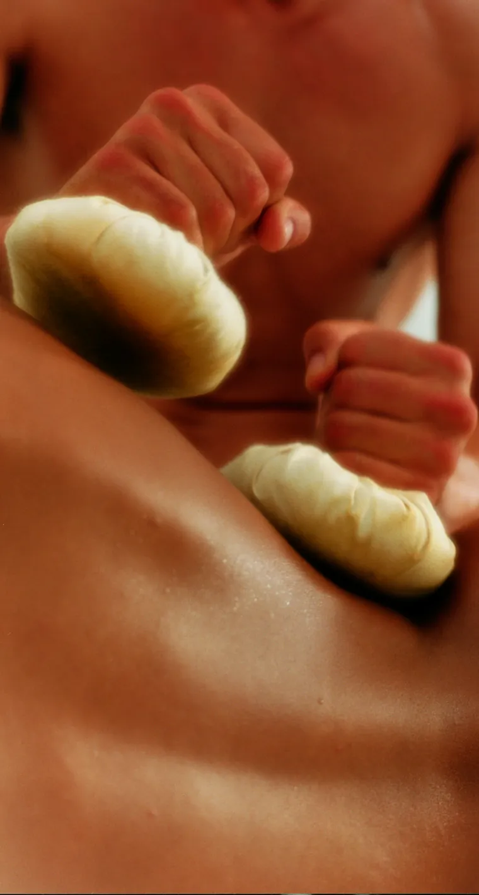
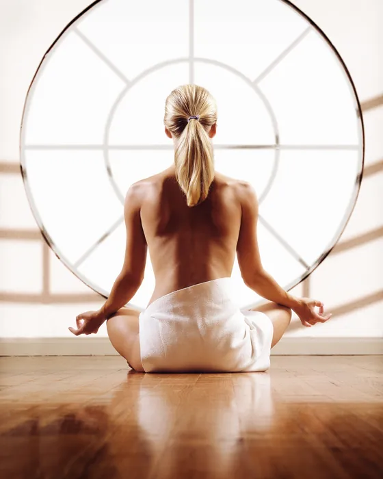
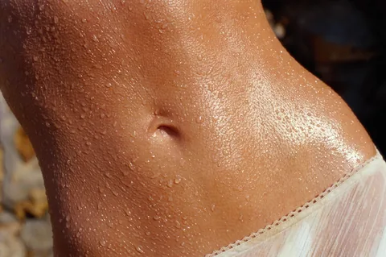

Oil & Candle
Óleo de vela morno, luz baixa e silêncio. Uma hora inteiramente sua.
60 min74 €
O Oporto Medical Spa é um medical spa na Rua São João de Brito, no Porto, onde fisioterapeutas e terapeutas especializadas fazem massagens de relaxamento, fisioterapia, drenagem linfática e Pilates clínico. É para quem quer desligar da cidade ou recuperar de uma dor. Cada pessoa é recebida individualmente, com um chá, e o tratamento começa por uma conversa.


A casa
Um refúgio na cidade, longe da vida agitada e das preocupações do dia-a-dia. Aqui, as melhores práticas do ocidente combinam-se com antigos rituais orientais numa experiência sensorial única. Fisioterapeutas e terapeutas especializadas trabalham lado a lado, para que cada visita seja ao mesmo tempo prazer e tratamento.
Fisioterapia, drenagem linfática e Pilates clínico, para recuperar e prevenir.
Tratamentos de rosto pensados para a sua pele, com mãos que conhecem cada gesto.
Ver tratamentosRituais de tranquilidade, luz baixa e silêncio. Uma hora só sua.
“O requinte nos cuidados, o compromisso com os resultados e o elevado nível terapêutico definem a nossa exclusividade.”
Rituais e tratamentos
Três caminhos, um só compromisso: que saia daqui mais leve do que entrou. Cada sessão começa com uma conversa e um chá.
As massagens de relaxamento custam entre 65 € e 88 € e duram 60 a 75 minutos. Fisioterapia e drenagem linfática custam 90 € por sessão e o Pilates clínico 50 €. Todos se reservam online, escolhendo a terapeuta e a hora.
Relaxar
Óleo de vela morno, luz baixa e silêncio. Uma hora inteiramente sua.
60 min74 €
Óleos escolhidos de acordo com as suas preferências e um toque lento que devolve o corpo ao seu ritmo.
60 min65 €
O melhor do ocidente e antigos rituais orientais num só ritual, para soltar tensões profundas.
75 min88 €
Recuperar
Avaliação, tratamento e um plano à sua medida, para que a dor não volte.
50 min90 €
Movimentos suaves e precisos que aliviam o peso das pernas e devolvem leveza ao corpo.
60 min90 €
Fortalecer
Sessão individual com fisioterapeuta, para uma coluna forte e um corpo consciente.
50 min50 €

Se procura sobretudo descanso, escolha uma massagem. Se tem dor ou uma limitação, comece pela fisioterapia. O Pilates clínico mantém o resultado.
| Tratamento | Indicado para | Como é | Duração | Preço |
|---|---|---|---|---|
| Aromaterapia | Stress, sono leve, primeira visita | Massagem lenta com óleos essenciais à escolha | 60 min | 65 € |
| Oil & Candle | Cansaço, pele seca, um presente | Óleo de vela morno vertido sobre a pele | 60 min | 74 € |
| World Therapy | Tensões profundas, costas e ombros | Técnicas ocidentais e orientais combinadas | 75 min | 88 € |
| Drenagem Linfática | Pernas pesadas, retenção, pós-operatório | Movimentos suaves e rítmicos, por fisioterapeuta | 60 min | 90 € |
| Fisioterapia & Postura | Dor lombar ou cervical, lesões, má postura | Avaliação, terapia manual e plano de exercícios | 50 min | 90 € |
| Pilates Clínico | Prevenir recaídas, fortalecer o core | Sessão individual com fisioterapeuta | 50 min | 50 € |
A sua visita
Cada pessoa é recebida individualmente e em total exclusividade. Este é o percurso de uma visita, do primeiro gole ao último suspiro.
Chega 10 a 15 min antes. Roupão, toalhas e chinelos à sua espera.
Uma conversa com a terapeuta sobre o que o corpo lhe pede hoje.
Luz baixa, mãos especializadas e todo o tempo do mundo.
Uns minutos só seus antes de voltar à cidade.
Ritual do mês · assinatura da casa
A massagem de assinatura do Oporto Medical Spa, criada na casa e registada como marca. Só a encontra aqui.
Marca registada no INPI
N.º 480541
Quem cuida de si
Fisioterapeutas com cédula profissional e terapeutas especializadas. Escolha com quem quer marcar. nomes e cédulas ilustrativos
Fisioterapeuta
Reeducação postural e Pilates clínico
Cédula OF n.º confirmar
Fisioterapeuta
Fisioterapia dermato-funcional e drenagem
Cédula OF n.º confirmar
Massoterapeuta
Rituais de tranquilidade
Formação confirmar
Massoterapeuta
World Therapy e aromaterapia
Formação confirmar
Reservar
Escolha o ritual, quem o recebe e a hora que lhe faz sentido. Prefere falar connosco? Ligue para o 22 616 30 30 ou escreva por WhatsApp.
Vouchers oferta
Ofereça saúde, relaxamento e bem-estar. Um valor ou um ritual, em digital no mesmo instante ou numa caixa de linho entregue em casa.
Recebeu um voucher? Use o código no último passo da reserva.
Quem já esteve cá
As avaliações são publicadas por clientes no Google e mostradas por ordem de data, sem seleção. O Oporto Medical Spa não as edita.
Membro da International Medical SPA Association e da Spa Industry Association. Pioneiro em Portugal no conceito de medical spa. Medical Spa significa, antes de mais, o compromisso pelos resultados terapêuticos.
Perguntas frequentes
Reserve aqui, pelo 22 616 30 30 ou por reservas@oportomedicalspa.com. Recomendamos dois dias de antecedência.
Na Rua São João de Brito, 610 - S/3, 4100-453 Porto, na zona ocidental da cidade, entre a Boavista e a Foz. Abre de segunda a sexta das 9h às 20h e ao sábado das 9h às 13h. acrescentar distância medida a um ponto de referência
As massagens de relaxamento custam entre 65 € (Aromaterapia, 60 min) e 88 € (World Therapy, 75 min). A Massagem Oil & Candle custa 74 € (60 min).
Uma sessão de Fisioterapia e Reeducação Postural custa 90 € e dura 50 minutos. A Drenagem Linfática Manual custa 90 € (60 min) e o Pilates Clínico 50 € (50 min).
Fisioterapeutas com cédula profissional e terapeutas especializadas. Ao reservar online pode escolher com quem quer marcar.
confirmar: estacionamento próprio, parque próximo ou rua
confirmar idiomas da equipa
Dez a quinze minutos antes da hora marcada, para mudar de roupa com calma e tomar o seu chá. Roupão, toalhas e chinelos estão à sua espera.
Avise-nos com pelo menos 24 horas de antecedência. Depois disso é cobrado 50% do valor da sessão.
Em programas de várias sessões recomendamos uma avaliação, que também fazemos aqui. Numa sessão individual basta indicar, ao marcar, se tem alguma doença ou toma medicação.
Apenas roupa confortável. Temos roupões, toalhas e chinelos à sua espera. Para o Pilates clínico, traga roupa que lhe permita mexer-se à vontade.
Significa, antes de mais, um compromisso com os resultados terapêuticos. As técnicas mais atuais combinam-se com rituais antigos, e quem cuida de si são fisioterapeutas e terapeutas especializadas. O Oporto Medical Spa foi pioneiro deste conceito em Portugal.
Sim. Os vouchers oferta compram-se online, por valor ou por ritual, e chegam por email no mesmo instante ou numa caixa de linho entregue em casa.
Como chegar
Estacionamento: confirmar. De metro ou autocarro: confirmar paragem mais próxima.